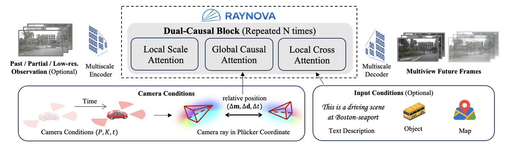

RAYNOVA
简单摘要
从论文摘要可以看出，这项工作的落点并不是单纯提升一个局部模块，而是围绕完整任务链路做系统设计。它通常会同时回答三个问题：任务为什么重要、现有方法卡在哪里、作者的新方案如何绕开这些瓶颈。 就这篇论文而言，摘要部分强调的核心是：World foundation models aim to simulate the evolution of the real world with physically plausible behavior. Unlike prior methods that handle spatial and temporal correlations sepa…
如果把它放进更大的技术背景中理解，可以把这篇论文视作一条“问题定义 → 表示设计 → 训练优化 → 实验验证”的完整研究闭环。也就是说，作者并不是只给出一个孤立模块，而是希望通过一整套方法让系统在真实场景或关键指标上取得更稳定提升。
- Unlike prior methods that handle spatial and temporal correlations separately, we propose RAYNOVA, a geometryagonistic multiview world model for driving scenarios that employs a dual-causal autoregressive framework.
- Different from existing works that impose strong 3D geometric priors, RAYNOVA constructs an isotropic spatio-temporal representation across views, frames, and scales based on relative Pl¨ucker-ray positional encoding, enabling robust generalization to diverse…
- To overcome these limitations, we pursue a universal framework that retains physical plausibility with minimal inductive biases.
核心创新
对照引言与方法部分，这篇论文的创新点主要体现在“如何重新组织问题求解链路”上。相比简单替换一个 backbone 或增加一个 loss，作者更像是在重新定义系统的关键接口与约束方式。
1）从任务设定上重新界定问题边界
论文强调的问题并不只是已有方案做得不够好，而是很多现有方法在目标可控性、泛化范围、效率约束或结构一致性上存在天然短板。因此作者先重述了任务定义，再围绕新的目标函数和场景假设去设计整体方案。
2）用统一框架串起表示、推理和优化
从原文描述看，这篇论文并不是把多个模块松散拼接，而是在一个统一框架里安排表示形式、关键模块和训练信号，使它们彼此服务。这类设计往往决定了方法能否真正具备工程可落地性。
3）把实验目标直接对齐到实际痛点
论文中的实验不仅比较常规 benchmark，也会额外关注更贴近实际系统需求的指标，例如稳定性、控制性、质量上界、对长尾场景的适应能力等。换句话说，它不是只追求单一数值，而是试图证明整套系统在真实使用方式下也成立。
- Unlike prior methods that handle spatial and temporal correlations separately, we propose RAYNOVA, a geometryagonistic multiview world model for driving scenarios that employs a dual-causal autoregressive framework.
- Different from existing works that impose strong 3D geometric priors, RAYNOVA constructs an isotropic spatio-temporal representation across views, frames, and scales based on relative Pl¨ucker-ray positional encoding, enabling robust generalization to diverse…
- RAYNOVA achieves state-of-the-art multi-view video generation results on nuScenes, while offering higher throughput and strong controllability under diverse input conditions, generalizing to novel views and camera configurations without explicit 3D scene repr…
- wei.zhan@applied.co To impose physical plausibility, prior work commonly considers spatial and temporal con framework that retains physical plausibility with minimal inductive biases.
技术细节
方法部分是理解论文价值的关键。结合原文可以看到，作者通常会先定义输入输出，再介绍中间表示、主干模块、损失函数或奖励机制，最后说明训练与推理时各模块如何协同。 对这篇论文而言，方法线索主要集中在以下几个方面：
3.1 方法主线与模块组织
根据方法章节可知，作者首先构建了一个核心表示或中间条件，再通过若干模块把它逐步转换为最终输出。这种结构的优势在于：每个模块都承担明确职责，既便于解释，也更便于在实验中做模块级消融。 原文中与主线最相关的描述包括：
- By encoding relative rather than absolute positions, it naturally supports extrapolation beyond the training distribution and generalizes to unconstrained real-world conditions.
3.2 训练目标、损失与公式信号
论文里的公式通常承担两类角色：一种是定义模型的预测关系与变量约束，另一种是定义优化时真正驱动模型更新的目标函数。阅读这类论文时，关键不是死记公式外形，而是理解每个公式分别在“表达结构”还是“约束行为”上发挥作用。
X1:K = (X1, X2, . . . , XK) with increasingly higher resoFigure 2. Overview of RAYNOVA Framework. RAYNOVA is composed of dual-casual (scale and time) blocks. The local scale attention
lutions hk × wk, k = 1, 2, . . . , K. The autoregressive likelihood is formulated as follows.
p(X1, X2, . . . , XK) =
frame t = 1, . . . , T and each camera view v = 1, . . . , V . To
从这些公式与周边段落可以推断，作者想要的不只是局部误差最小化，而是通过更精细的目标设计，让模型在结构一致性、生成质量、时序稳定性或可控性等方面同时受约束。这也是很多新方法能真正优于 baseline 的原因。
3.3 把全文方法串起来理解
如果把这篇论文的方法看成一条流水线，那么它的逻辑通常是：先把输入变成一个更适合推理的中间表示，再围绕该表示施加关键模块与训练目标，最后把输出落到可评估、可可视化的结果上。 这种“表示—模块—目标—结果”的闭环设计，是本页所锁定模板最想强调的部分，因为它比零散摘录更能帮助后续复现与横向比较。
实验结论
实验部分主要回答两个问题：第一，方法是否真的优于已有基线；第二，优势究竟来自哪个模块。对这篇论文来说，实验设计明显围绕“与现有方法的对比 + 对关键组件的消融”展开。
从实验段落的关键词和结果描述看，论文最想传达的结论包括：
- RAYNOVA achieves state-of-the-art multi-view video generation results on nuScenes, while offering higher throughput and strong controllability under diverse input conditions, generalizing to novel views and camera configurations without explicit 3D scene repr…

- 方法在主任务指标上不是偶然提升，而是与其结构设计和训练目标直接相关；
- 作者通过消融实验说明，若拿掉关键模块，性能与结果质量会明显回落；
- 论文不仅关注数值对比，也关注可视化质量、稳定性或可控性等更接近真实应用的信号。
因此，实验部分最重要的阅读方式不是死记某一列数字，而是看清：作者究竟想证明哪个机制有效、这个机制的收益是在什么设置下成立、它是否有明显的边界条件。
理解评价
从研究定位上看，这篇论文的意义在于它没有把问题局限在某一个局部改动，而是尝试给出一套更完整的求解路径。对读者而言，最值得关注的是它如何重新组合表示、模块和训练目标，以及这些设计是否能迁移到相近任务上。
如果把它当成研究参考，我会重点看三件事： 第一，这套方法的核心归纳偏置是什么； 第二，实验中真正拉开差距的模块是哪一块； 第三，它的限制条件是数据、算力、时序长度，还是奖励/监督信号本身。
- To overcome these limitations, we pursue a universal framework that retains physical plausibility with minimal inductive biases.
- • Scalable Data-Driven Framework.
进一步延伸阅读时，可以把这篇工作放到更广泛的技术脉络里：它与同类方法相比，到底是在表示层、生成层、优化层还是评估层提出了更强的方案。下面这些自动检索到的相关论文可作为继续追踪的入口：